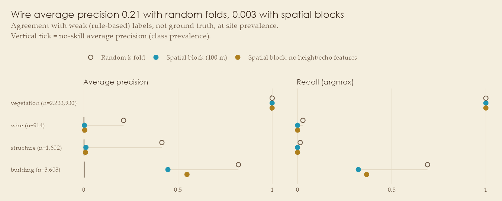
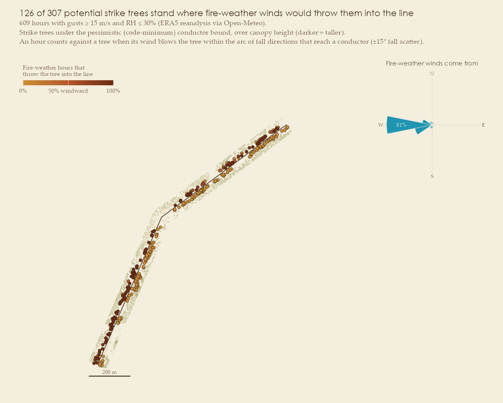

Case study: Sunshine Canyon, Colorado
Source:vignettes/articles/sunshine-canyon.Rmd
sunshine-canyon.Rmd| Line | Sunshine–Boulder Hydro 115 kV, wood H-frames (OSM way 1381464850) |
| Setting | Wildland–urban interface west of Boulder; the 2010 Fourmile Canyon Fire burned about 2.5 km away |
| LiDAR |
CO_DRCOG_2020, UTM metres, ~35 pts/m², ground /
unclassified / noise only |
| Line length, above-ground points | 1.52 km, 2.26 M |
| Conductor returns found | 914, along 2% of the line |
| Result | Bounded: 3 robust grow-in candidates, 27 segments undecidable |

The conductor is barely sampled

After the sanity checks, conductor returns survive along 2% of the line, and spans run 257–468 m between H-frames across a 250 m descent into the canyon. Along 22% of the line the next support is outside the data, so there is no upper bound at all. One caveat the October 2026 review surfaced: the rule-labelled conductor returns reach 13.5 m from the OSM centreline while this run’s grow-in zone is 6 m wide, so returns over canopy between those distances stayed in the canopy model; the pipeline warned about it at the time, and the run should be repeated with a wider zone (RFC 0002, finding A6).
| optimistic conductor (upper bound) | pessimistic conductor (code minimum) | |
|---|---|---|
| segments with ≥ 5 m² of canopy in the clearance envelope | 3 of 30 | 28 of 30 |
| potential strike trees | 33 | 322 |
- 3 robust grow-in candidates. The top one (about 1.01–1.06 km along the line, conductor measured along 41% of it) has a conductor about 15 m up, leaving a low H-frame on the canyon floor, beside riparian cottonwoods up to 27 m tall. The other two have trees of 20–29 m that exceed even the highest plausible conductor. They are the places to verify with imagery or a field visit first.
- 27 segments are bound-dependent. Whether they need work depends on where the conductor actually is, which this acquisition doesn’t show.
-
The LiDAR saw the corridor. Every segment has at
least 94% of its corridor and 85% of its grow-in zone observed (median
100%), so none is tiered
no data.
Wires do not generalise across space here
| class | n | prevalence | avg. precision, spatial blocks | random folds | spatial, no height/echo |
|---|---|---|---|---|---|
| building | 3,608 | 0.0016 | 0.54 | 0.85 | 0.62 |
| structure | 1,602 | 0.0007 | 0.047 | 0.44 | 0.012 |
| wire | 914 | 0.0004 | 0.005 | 0.20 | 0.006 |

With only a few hundred metres of labelled conductor and five structures, wires and structures don’t generalise across space. Random folds would have hidden that: they report a wire average precision of 0.20 where spatial blocks report 0.005.

The grown-in canopy is not the dry canopy
A dry-season (July–September) median of 25 Landsat 8 scenes from 2019–2021, bracketing the 2020 flight, covers the corridor with 266 pixels. Only 63 are scored: 99 are under half canopy, and 104, mostly along the corridor edge and inside the bend, are less than 80% observed by the LiDAR, so their reflectance would describe land outside the clip. 15 of the 30 segments rest on at least two scored pixels and 5 m² of grown-in canopy and get a percentile; the others keep their index but aren’t ranked. NDVI and NDMI agree closely across the ranked segments (r = 0.93).
| robust grow-in candidate | scored pixels | NDVI percentile | NDMI percentile |
|---|---|---|---|
| 0.10–0.15 km, trees to 20 m | 3 | 0.76 | 0.68 |
| 1.01–1.06 km, riparian cottonwoods on the canyon floor (top candidate) | 1 | not ranked | not ranked |
| 1.06–1.11 km, canyon floor, trees to 29 m | 3 | 0.90 | 0.95 |
- Neither ranked grow-in candidate is dry; both sit in the greener half of the corridor, and the 1.06–1.11 km segment is among the wettest canopy on the line (riparian trees on the canyon floor). The top candidate at 1.01–1.06 km can’t be ranked: its riparian strip fills only one scored pixel, and one mixed 30 m pixel can’t carry a percentile.
- The 2 driest segments (lowest NDVI quarter: 0.05–0.10 and 0.46–0.51 km) are both bound-dependent: grow-in only if the conductor is at the code minimum. If the conductor turns out to be low there, encroachment and dry fuel coincide, so these come first among the 27 undecidable segments.

Fire-weather winds come from one direction, and that splits the strike trees in two
Over 2015–2024 there were 609 fire-weather hours (gusts ≥ 15.2 m/s, RH ≤ 30%) in about 130 distinct events (hours separated by less than six hours count as one); two-thirds of the hours and 45% of the events fell in October–December. 97% of the hours came from the west: the Front Range downslope winds behind the 2021 Marshall Fire. The line runs south-west to north-east, so those winds blow trees west of it towards the conductors and trees east of it away.
| potential strike trees | windward (≥ 50% of fire-weather hours) | wind-weighted strike-tree count | |
|---|---|---|---|
| pessimistic conductor (code minimum) | 322 | 138 | 137 |
| optimistic conductor (upper bound) | 33 | 18 | 18 |
The wind-weighted count is the sum over strike trees of the share of fire-weather hours that would throw each one into the line: how many trees a typical fire-weather hour’s winds point at the conductors, if they fell. It carries no failure probability.
- The split is close to all-or-nothing. Windward trees are hit in 95% of fire-weather hours on average; the median leeward tree is hit in 1%. (Fall-in reach is the minimum 3D distance along the span, so trees that reach a lower point of a sloping conductor a few metres along the line count too; that is why the counts exceed the nearest-station figures an earlier version reported.)
- Under the optimistic bound, the top grow-in candidate also has the most windward strike trees: 9 of its 16, at 1.01–1.06 km. It is the segment to verify first on both counts.
- The two dry segments (0.05–0.10 and 0.46–0.51 km) have 14 and 8 potential strike trees under the pessimistic bound, of which 4 and 3 are windward.

Configuration
run_case_study(list(
id = "sunshine",
line_ids = "1381464850", project = "CO_DRCOG_2020",
tiles = sprintf("USGS_LPC_CO_DRCOG_2020_B20_%s.laz", c("w0472n4429", "w0472n4430")),
half_width_m = 45, wire_search_m = 12, phase_offset_m = 5.5,
under_line_m = 6, wire_zone_m = 10, structure_mask_m = 8,
min_ground_clear_m = 4.9, # NESC 232-1, 115 kV, pedestrian-only land
attach_m = 20, # upper limit on wood H-frame attachment height
vendor_classes = FALSE,
landsat = list(years = 2019:2021, months = 7:9, dry_index = "ndvi"),
wind = list(start = "2015-01-01", end = "2024-12-31", gust_quantile = 0.95, max_rh = 30)
))The full script is analysis/run_sunshine_canyon.R.